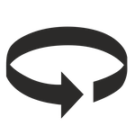

<!DOCTYPE html>
<html>
  <head>
    <title>Experiment</title>
    <script src="jspsych/jspsych.js"></script>
    <script src="jspsych/plugin-html-keyboard-response.js"></script>
    <script src="https://unpkg.com/@jspsych/plugin-image-keyboard-response@1.1.1"></script>
    <script src="jspsych/plugin-video-keyboard-response.js"></script>
    <script src="https://unpkg.com/@jspsych/plugin-preload@1.1.1"></script>
    <link href="jspsych/jspsych.css" rel="stylesheet" type="text/css" />
  </head>
  <body></body>
  <script>
    /* initialize jsPsych */
    /* var jsPsych = initJsPsych(); */ 
    var jsPsych = initJsPsych({
        on_finish: function() {
            jsPsych.data.displayData();
        }
        });

    /* create timeline */
    var timeline = [];

    var video = ['videos/control.mp4', 'videos/h_rb.mp4','videos/h_rgb.mp4'];


    /* preload media*/
    var preload = {
        type: jsPsychPreload,
        auto_preload: true,
        video: video
        }
    
    timeline.push(preload);

    /* define welcome message trial */
    var welcome = {
        type: jsPsychHtmlKeyboardResponse,
        stimulus: "<Strong> Welcome to the experiment. Press any key to begin."
        };

    
    timeline.push(welcome);   

    /* experiment instructions */
    var instructions = {
        type: jsPsychHtmlKeyboardResponse,
        stimulus: `
            <p>In this experiment, a video will appear in the center 
            of the screen. After the video finishes playing, you will be prompted to press a key.</p><p>If the video image moves <strong>left</strong>, 
            press the number 1 on the keyboard.</p>
            <p>If the image moves <strong>right</strong>, press the number 2 
            .</p><p>If the image moves in both or neither direction, press the number 3.</p>
            <div style='width: 1000px;'>
            <div style='float: left;'></img>
            <p class='small'><strong>Press the 1 key</strong></p></div>
            <div style='float: right;'></img>
            <p class='small'><strong>Press the 2 key</strong></p></div>
            </div>
            <p>Press any key to begin.</p>
        `,
        post_trial_gap: 1000
        };

    timeline.push(instructions);

    /* define trials*/

    var task = {/* fixation cross */
    type: jsPsychHtmlKeyboardResponse,
    stimulus: '<p>Click 1 for leftwards movement, 2 for rightwards movement, and 3 for neither or both.<p>',
    choices: ['1', '2','3'],
    data: {
            task: 'response'
        }
    }; 

    var control_trial = {
        type: jsPsychVideoKeyboardResponse,
        stimulus: [
            'videos/control.mp4'
        ],
        choices: "NO_KEYS",
        trial_ends_after_video: true
        };
    
    var rb_trial = {
        type: jsPsychVideoKeyboardResponse,
        stimulus: [
            'videos/h_rb.mp4'
        ],
        choices: "NO_KEYS",
        trial_ends_after_video: true
        };
    
    var rgb_trial = {
        type: jsPsychVideoKeyboardResponse,
        stimulus: [
            'videos/h_rgb.mp4'
        ],
        choices: "NO_KEYS",
        trial_ends_after_video: true
        };

    timeline.push(control_trial, task); 
    timeline.push(rb_trial, task); 
    timeline.push(rgb_trial, task); 

  </script>
</html>